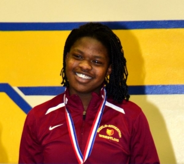
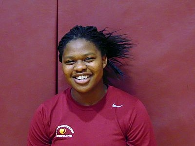
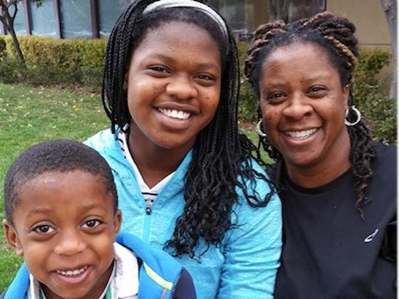
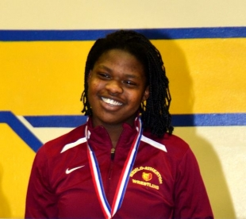
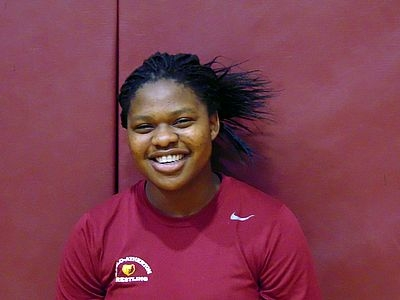
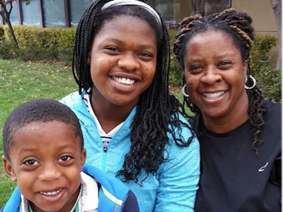

About Me


Portfolio-
Hello, My name is Folashade Oyinkansola Akinola, I am 17 years young. In this upcoming year I will a senior at Menlo atherton High School
in Menlo Atherton, CA. I love my school and am excited to start school again. Ever since freshman year I have had nothing but great
teachers and peers. Which is why it is extremely sad that things year will be my last year of high school before moving onto the next
part of my life at a four year college.
High School-
I am a person who has always been interested in experience new and different things whenever I am possible. So luckily at menlo Atherton
the only problem that I have encountered, sometimes I have many hands in too many cookie jars. At Menlo Atherton I have been included the
Intercambio, Pride Pals, the surf-riders and Global Leaders club.
Intercambio-
At Menlo Atherton High School, we have students who have immigrated to US with their families for various reasons. The intercambio club,
is a club directed towards bridging the social and educational gap between native spanish speakers who are trying to learn english and
the culture, and native english speakers who want to practice and better their spanish speaking skills. In the club we meet and speak
with the native spanish speakers and sit down and talk with them, play games, and go on beach clean-ups. I persoanl have really
enjoyed the club for the oppurtunties and new friends that it has given me. From the Intercambio program, the bridge program was created.
The bridge program's goal is simular to intercambio's goal for bridging the the gap, but the bridge club focuses more on the social and
cultural aspects.
Pride Pals-
Global Leaders-
Family-
My direct family: I live with my little brother Jayden(7) and Eunice, my mother (I'd be dead if I told you).

My older brother, Ajj, moved out awhile ago to attend college. On the side he has now decided to become a sound cloud rapper. IK LOL.
Of course ima be a plug, so heres his youtube.
Careless AJJ
Wrestling-
Background
I started Wrestling scince I was 12 years old, when I was in the 5th grade. My oldered brother wrteslted at our old middle school. I was always the little sister that followed the older brother
around, and that time I follwed him onto the mat. And I can hionestly say it was the best, and he'll say the most annoying thing I ever did. From a young age I was always super
energetic and admittinglg aggersive. Wrestling gave me the chance to wortk with both. And I feel in love right away.
Accomplishments
-3x PAL champion'
-3x CCS champion
-3x state placer(freshman year:7th, Sophmore year:5th: Senior year 2nd)
-2x Winner of the California State "persuing victory with honor" award
-3x national all american
-2017 Cadet NAtional Champion
-Personal Accomplishments-
-First frshman at Menlo Atherton to place at state
Future
Work experience
 src="HACKER.png"
onclick="changedImage"/>
src="HACKER.png"
onclick="changedImage"/>
About Me


Portfolio-
Hello, My name is Folashade Oyinkansola Akinola, I am 17 years young. In this upcoming year I will a senior at Menlo atherton High School in Menlo Atherton, CA. I love my school and am excited to start school again. Ever since freshman year I have had nothing but great teachers and peers. Which is why it is extremely sad that things year will be my last year of high school before moving onto the next part of my life at a four year college.
High School-
I am a person who has always been interested in experience new and different things whenever I am possible. So luckily at menlo Atherton the only problem that I have encountered, sometimes I have many hands in too many cookie jars. At Menlo Atherton I have been included the Intercambio, Pride Pals, the surf-riders and Global Leaders club.
Intercambio-
At Menlo Atherton High School, we have students who have immigrated to US with their families for various reasons. The intercambio club, is a club directed towards bridging the social and educational gap between native spanish speakers who are trying to learn english and the culture, and native english speakers who want to practice and better their spanish speaking skills. In the club we meet and speak with the native spanish speakers and sit down and talk with them, play games, and go on beach clean-ups. I persoanl have really enjoyed the club for the oppurtunties and new friends that it has given me. From the Intercambio program, the bridge program was created. The bridge program's goal is simular to intercambio's goal for bridging the the gap, but the bridge club focuses more on the social and cultural aspects.
Pride Pals-
Global Leaders-
Family-
My direct family: I live with my little brother Jayden(7) and Eunice, my mother (I'd be dead if I told you).

My older brother, Ajj, moved out awhile ago to attend college. On the side he has now decided to become a sound cloud rapper. IK LOL. Of course ima be a plug, so heres his youtube.
Careless AJJ
Wrestling-
Background
I started Wrestling scince I was 12 years old, when I was in the 5th grade. My oldered brother wrteslted at our old middle school. I was always the little sister that followed the older brother around, and that time I follwed him onto the mat. And I can hionestly say it was the best, and he'll say the most annoying thing I ever did. From a young age I was always super energetic and admittinglg aggersive. Wrestling gave me the chance to wortk with both. And I feel in love right away.Accomplishments
-3x PAL champion' -3x CCS champion -3x state placer(freshman year:7th, Sophmore year:5th: Senior year 2nd) -2x Winner of the California State "persuing victory with honor" award -3x national all american -2017 Cadet NAtional Champion -Personal Accomplishments- -First frshman at Menlo Atherton to place at stateFuture